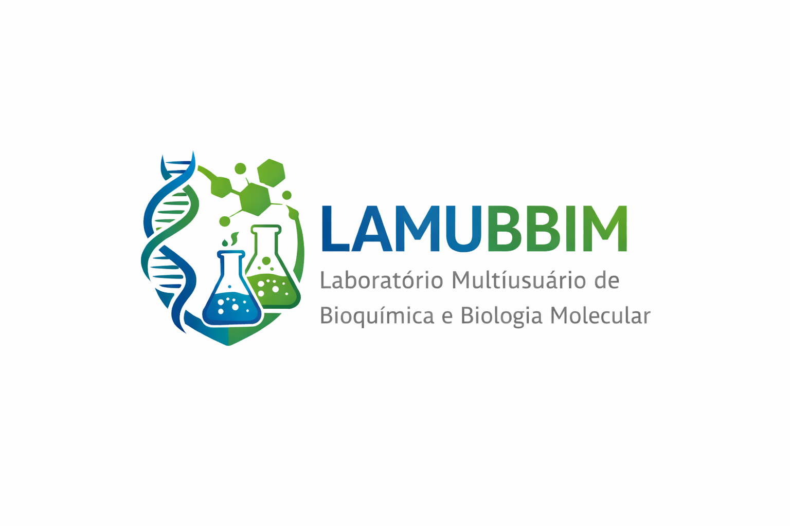

Laboratório Multiusuário de Bioquímica e Biologia Molecular
Universidade Federal de Santa Maria – UFSM
Estatuto
Estrutura, organização e funcionamento do LAMUBBIN.
Regulamento
Normas de uso, agendamento e gestão da infraestrutura.
Comitê Gestor
Composição e documento oficial de nomeação.
Comitê de Usuários
Representação dos usuários e apoio operacional.
Agendamento
Acessar o portal institucional da UFSM para agendamento de uso.
Link externo